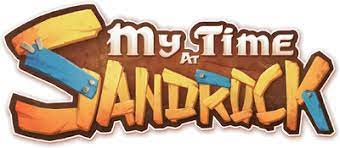

Viaje para a comunidade desértica de Sandrock e assuma o papel de um construtor iniciante, também chamado de Builder
Use o seu confiável conjunto de ferramentas para obter recursos, construir máquinas e transformar sua oficina decadente em uma bem equipada instalação de produção
É assim que você salvará a cidade das garras de um colapso econômico!

Um jogador |
Cooperativo online |
Conquistas steam |
Nuvem steam |
|---|